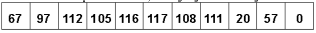
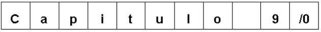

Introducción.
La mayoría de las que veremos a continuación, responden a la norma ANSI C, por lo que serán independientes del compilador que usemos.
Estas tienen sus prototipos definidos en los archivos de encabezamiento stdio.h, stdlib.h, string.h y ctype.h. Agregaremos tambien algunas
que caen fuera de la norma, por lo que su portabilidad a otros compiladores distintos al que fueron extraidas, no es segura. Seran aquellas
declaradas en Headers no citados arriba. Sin embargo, hoy en día practicamente todos los compiladores las traen ó tienen otras similares,
con nombres parecidos. De cualquier forma, antes de compilar los ejemplos aquí suministrados, en caso de encontrarse alguna de estas, verifique
con su manual de Libreria la existencia y compatibilidad de la misma.
Recordemos tambien que en la memoria, el string se guardará de la siguiente forma:

Donde los números son el código ASCII que representa a cada caracter del string , en particular , note que 20 corresponde al espacio , terminandose
con un NULL (código 0 ).
A los efectos prácticos, para las funciones de manejo de los mismos, es como si en realidad hubieramos memorizados directamente los caracteres:

El código ASCII de los carácteres imprimibles va entre el 31 y 127, reservándose los códigos entre 0 y 30 para los caracteres de control (retorno de carro,
avance de línea, tabulador, etc.).
Si estuvieramos en el caso de ingresar un string variable, por ejemplo, leyendolo desde el teclado, podríamos utilizar un array, de la siguiente forma:
char nombre[128];
scanf("%s", nombre);
char *p;
scanf("%s", p) /* Incorrecto. */
char *p;
p=(char *)malloc(128 * sizeof(char));
scanf("%s",p) /* Correcto. */
Funciones de impresión de strings.
Daremos un análisis de las funciones que permiten la impresión en pantalla de strings, muchas de ellas pueden obviamente, utilizarse para imprimir otro tipo de variable, pero aquí sólo describiremos su aplicación particular sobre el tema de nuestro interés.
Printf()
Header: <stdio.h>
Prototipo: int printf( const char *formato, argumento, ... )
Ejemplos: En los ejemplos siguientes se ha colocado el caracter | adelante y atrás de la secuencia de comando, para mostrar donde empieza y donde termina la impresión
del string.
Existe otra forma más específica que la anterior, aunque más restringida, puts().p="Lenguaje C"; /* 10 caracteres */ printf("|%15s|" , p ) ; /* imprime : | Lenguaje C| */ printf("|%15.8s|" , p ) ; /* " : | Lenguaje| */ printf("|%-15s|" , p ) ; /* " : |Lenguaje C | */ printf("|%-15.8s|" , p ) ; /* " : |Lenguaje | */ printf("|%.6s|" , p ) ; /* " : |Lengua| */ ancho = printf("|%15s|" , p ); /* imprime : | Lenguaje C| */ printf("|%*.8s|" , p , ancho); /* " : | Lenguaje| */
Puts()
Header: <stdio.h>
Prototipo: int puts(const char *s)
Comentario: Copia un string terminado con un NULL y apuntado por 's' en la salida estandar, normalmente stdout o vídeo. Si la salida fue exitosa retorna un valor positivo,
caso contrario EOF. Luego de impreso el string agrega automáticamente un \n o avance de línea. Es más rápida que la anterior, ya que escribe directamente el buffer de vídeo.
Solo es aplicable a variables del tipo string.
Ejemplo:
#include <stdio.h> main(){ char p[]="Uno", s[]="Dos"; puts(p); /* Imprime: Uno puts(s); Dos */ }
Funciones de adquisición de string.
Cuando se necesita leer un string enviando desde el teclado, se utilizará algunas de las funciones abajo citadas, debiendose tener los recaudos descritos antes, ya que la
longitud del mismo es desconocida.
Scanf()
Header: <stdio.h>
Prototipo: int scanf(const char *formato, direccion, ...)
Comentario: Esta función es la inversa a printf() y valen para ella los mismos comentarios respecto a su generalidad.
Ejemplo:
En este caso se leerá un primer string de no más de 20 caracteres, y se enviará a la dirección contenida por el puntero 'p', luego se esperará un ENTER y se enviarán a la dirección de 'q' todos aquellos caracteres leídos que correspondad a los números o letras comprendidas entre la A y F. De la misma manera que para printf(), hay funciones menos generales, dedicadas ecpresamente a la lectura de strings, como gets(), que veremos a continuación.scanf("%20s" \n "%[0-9A-F]s",p,q);
Gets()
Header: <stdio.h>
Prototipo: char *gets(char *s)
Comentario: Lee caracteres desde la entrada estandar, incluyendo los espacios hasta que encuentra un avance de línea (ENTER), este es reemplzado por un NULL, y el string
resultante cargado en la dirección indicada por 's'. Retorna 's' o NULL en caso de error. Es responsabilidad del programador, que 's' tenga suficiente longitud como para albergar
lo leído.
Funciones de conversión entre string y variables numéricas.
Puede darse el caso que la información a ingresarse a un programa ejecutable, por él. Para evaluar si un string car dentro de una categoría dada, es decir, si está compuesto exclusivamente
por números, letras mayúsculas, minúsculas, carácteres alfanuméricos, etc. existe una serie de funciones, algunas de las cuales ya se han usado. Estas deben ser usadas con los strings, analizando
caracter a caracter de los mismos, dentro de un foe o un while.
for(i=0; palabra[i] != NULL; i++){
if( isalnum(palabra[i])){
...
}
}
Is ... ()
Header: <ctype>
Prototipo:
int isalnum(int c)
int isalpha(int c)
int isascii(int c)
int iscntrl(int c)
int isdigit(int c)
int islower(int c)
int isupper(int c)
int ispunct(int c)
int isspace(int c)
int isxdigit(int c)
Portabilidad: Definida en ASCII.
Comentario: Retornarán un valor CIERTO (distinto de cero) si el caracter enviado como argumento car dentro de la categoría fijada para comparación y FALSO o cero en caso contrario.
Las categorías para cada función son las siguientes:
| La función: | Retorna CIERTO si 'c' es: |
| isalnum(c) | Alfanumérico (letras o números). |
| isalpha(c) | Alfabeto, mayúsculas o minúsculas. |
| isascii(c) | Si su valor está entre 0 y 126. |
| iscntrl(c) | Si es un caracter de control cuyo ASCII está comprendido entre 0 y 31 o si es el código de "delete", 127. |
| islower(c) | Si es un caracter alfabético minuscula. |
| isupper(c) | Si es un caracter alfabético mayúsculas. |
| isdigit(c) | Si es un número comprendido entre 0 y 9. |
| ispunct(c) | Si es un caracter de puntuación. |
| isspace(c) | Si es el caracter espacio,tabulador, avance de línea, retorno de caroo, etc. |
| isxdigit(c) | Si es código correspondiente a un número hexadecimal, es decir, entre 0-9 o A-F o a-f. |
ATOI(), ATOL(), ATOF().
Header: <stdlib.h>
Prototipo:
int atoi(const char s*)
long atol(const char s*)
double atof(const char *s)
Portabilidad: Definida en ASCI C.
Comentario: Convierten el string apuntando por s a un número. Atoi() retorna un entero, atol() un long y aotf() un double. El string puede tener la siguiente configuración:
[ espacios, blancos, tabulador, etc ][signo]xxx
Donde xxx son caracteres entre 0 y 9, para atoi() y atol(). Para atof() en cambio, se aceptan:
[espacios, etc][signo]xxx[.][xxx] o
[espacios, etc][signo]xxx[.][e o E [signo]xxx]
Según se desee usar la conversión de punto flotante o científica.
Es posible también, aunque menos frecuente, realizar operación inversa, es decir, convertir un número en un string.
ITOA(), ULTOA().
Header: <stdlib.h>
Prototipo:
char *itoa(int numero, char *s, int base)
char *ultoa(unsigned long numero, char *s, in base)
Comentario:
Retornan un puntero a un string formado por caracteres que representan los dígitos del número enviado como argumento .
Por base se entiende la de la numeración en la que se quiere expresar el string , 10 para decimal , 8 para octal , 16 para
hexadecimal, etc. Itoa() convertirá un entero , mientras ultoa() lo hará con un unsigned long.
Determinación de la longitud de un string.
Hemos aplicado anteriormente esta funcón, damos aquí entonces, sólo una ampliación de sus características.
Strlen(), fstrlen().
Header: <string.h>
Prototipo:
size_t strlen(const char *s)
size_t far_fstrlen(const char *s)
Portabilidad: Definidas en ANSI C.
Comentario: Retornan un entero con la cantidad de caracteres del string. No toma en cuenta al terminador NULL. Por lo que la memoria real
necesaria para albergar al string 1+strlen(s). _fstrlen() da idéntico resultado, pero acepta como argumento un puntero "far".
Ejemplo:
char s[128]; gets(s); p=(char *)malloc(sizeof(strlen(s)+1));
Copia y duplicación de strings.
Vimos que el operador de asignación no está definido para strings, es decir, que hacer p=q, donde 'p' y 'q' son dos arrays,
np produce la copia de q en p y directamente la expresión no es compilada. Si en cambio p y q son dos punteros a caracteres, la expresión
es compilada, pero no produce el efecto de copia, simplemente, cambia el valor de 'p', haciendo que apunte al mismo string que 'q', es decir,
que no se genere uno nuevo, por lo que todo lo operado sobre 'p' afectará al original, apuntado por 'q'.
Para generar entonces, una copia de un string en otro lugar de la memoria, se deben utilizar algunas de las funciones abajo descritas. Hay que
diferenciar la copia de la duplicación: la pirmera copia un string sobre un lugar previamente reservado de memoria (mediante malloc(), calloc()
o alguna otra función de alocación), en cambio la duplicación genera el espacio para guardar al nuevo string así creado.
Strcpy()
Header: <string.h>
Prototipo:
char *strcpy(char *destino, const char *origen)
Comentario: Copia los caracteres del string "origen", incluyendo el NULL, a partir de la dirección apuntada por "destino". No verifica que haya suficiente
memoria reservada para tal efecto, por lo que es responsabilidad del programador ubicar previamente suficiente memoria como para albergar a una copia de
"origen". Aunque es superfluo, su retorno es el puntero "destino".
Existe también una función para realizar la copia parcial. Por lo general las funciones que realizan acciones sobre una parte solamente, de los strings, llevan
el mismo nombre de las que los afectan totalmente, pero con la adición de la letra "n".
Strncpy()
Header: <string.h>
Prototipo:
char *strncpy(char *destino, const char *origen, size_t n_char)
Portabilidad: Definidas en ANSI C.
Comentario: Copia n_char caracteres del string "origen", NO incluyendo el NULL, si la cantidad de caracteres copiada es menor que strlen(origen)+1, en la dirección
apuntada por "destino". n_char es un número entero y deberá ser menor que la memoria reservada apuntada por destino.
Ejemplo:
Los strings quedarían, luego de la copia:#include <string.h> main(){ char strvacio[11]; char strorigen[]="0123456789"; char strdestino[]="ABCDEFGHIJ"; ... strncpy( strdestino, strorigen, 5 ); strncpy( strvacio, strorigen, 5 ); strvacio[5]='\0'; ... }
strdestino[]==0,1,2,3,4,F,G,H,I,J,\0
strvacio[]==0,1,2,3,4,\0, indefinidos
Note que en el caso de strdestino no hizo falta agregar el NULL, ya que éste se generó en la inicialización del mismo, en cambio strvacio no fue inicializado, por lo qie para terminar el string, luego de la copiam se deberá forzosamente agregar al final del mismo.
Strdup()
Header: <string.h>
Prototipo:
char *strdup(const char *origen)
Comentario: Duplica el contenido de "origen" en una zona de memoria por ella reservada y retorna un pintero a dicha zona.
Ejemplo:
Note que el retorno de la función debe ser siempre asignación a un dato puntero.#include <string.h> main(){ char *p; char q[]="Duplicación de strings"; p=strdup(q); ... }
Concatenación de strings.
Se puede, mediante la concatenación de dos o más strings, crear otro, cuyo contenido es el agregado del de todos los anteriores.
La concatenación de varios strings puede anidarse, de la siguiente manera:
srtcat(strcat(x,w),z);
En la cual 'x' se le agrega a continuación el 'w', y luego el 'z'. Por supuesto, 'x' tiene que tener suficiente longitud como albergarlos.
Strcat()
Header:<string.h>
Prototipo:
char *strcat(char *destino, const char *origen)
Comentario: Agrega el contenido de "origen" al final del string inicializado "destino", retornando un puntero a este.
Ejemplo:
#includechar z[20] ; main(){ char p[20] ; char q[] = "123456789" ; char w[] = "AB" ; char y[20] = "AB" ; strcat( y , q ) ; /* * Correcto , el contenido de y[] será: * y[] == A,B,1,2,3,4,5,6,7,8,9,\0 */ strcat( z , q ) ; /* * Correcto , por ser global z[] quedó * inicializado con 20 NULLS por lo que * luego de la operación quedará: * z[] == 1,2,3,4,5,6,7,8,9,\0 */ strcat( p , q ) ; /* * Error ! p no ha sido inicializado por * lo que la función no encuentra el NULL * para empezar a agregar , por lo que * barre la memoria hasta encontrar * alguno, y ahí escribe con resultados, * generalmente catastróficos. */ strcat( w , q ) ; /* * Error ! w solo tiene 3 caracteres, * por lo el resultado final será: * w[] == A,B,1 sin la terminación * del NULL por lo que cualquier * próxima operación que se haga * utilizando este array, como string, * fallará rotundamente . */ }
Strncat()
Header: <string.h>
Prototipo:
char *strncat (char *destino, const char *origen, size_t cant )
Comentario: Similar al anterior, pero solo contatena cant caracteres del string "origen" en "destino".
Comparación de strings.
No debe confundirse la comparación de strings, con la de punteros, es decir, if(p==q){...}.
Sólo dará CIERTO cuando ambos apunten al MISMO string, siempre y cuando dichos punteros sean " near " ó " huge ".
El caso que acá nos ocupa es más general, ya que involucra a dos ó más strings ubicados en distintos puntos de la
memoria ( abarca el caso anterior , como situación particular).
Strcmp()
Header: <string.h>
Prototipo:
int strcmp(const char *sl, const char *s2)
Comentario: Retorna un entero, cuyo valor depende del resultado de la comparación.
< 0 si s1 es menor que s2.La comparación se realiza caracter a caracter, y devuelve el resultado de la realizada entre los primeros dos que sean distintos. La misma se efectua tomando en cuenta el código ASCII de los caracteres así será por ejemplo '9' < 'A', 'A'<'Z' y 'Z'<'a'.
== 0 si s1 es igual a s2.
> 0 si s1 es mayor que s2.
Strcmpi()
Header: <string.h>
Prototipo:
int strcmpi(const char *s1, const char *s2)
Comentario: Retorna un entorno, de una manera similar a la anterior pero no es sensible a la diferencia entre mayúsculas y minúsculas,
es decir, que en este caso 'a'=='A' y 'Z'>'a'.
Strncmp(),strncmpi().
Header: <string.h>
Prototipo:
int strcmpi(const char *s1, const char *s2, size_t cant)
Comentario: Retornan un entero, con características similares a las de las funciones hermanas, descritas arriba, pero solo comparan los
primeros "cant" caracteres.
Búsqueda dentro de un string.
Muchas veces dentro de un programa, se necesita ubicar dentro de un string, a un determinado caracter o conjunto ordenado de ellos. Para simplificarnos la tarea existen una serie de funciones de Librería, que toman por su cuenta la resolución de este problema:
Strchr() y strrchr().
Header: <string.h>
Prototipo:
char *strchr(const char *s1, int c)
char *strrchr(const char *s1, int c)
Comentario:Retornan un puntero, a la posición del caracter dentro del string, si es que lo encuentrann, o en su defecto, null. Strchr()
barre el string desde el comienzo, por lo que marcará la primer aparición del caracter en él, en cambio, strrchr() lo barre desde el final,
es decir, que buscará la última aparición del mismo. El terminador NULL es considerado como parte del string.
Strbrk()
Header: <string.h>
Prototipo:
char *strbrk(const char *s1, const char *s2)
Comentario: Similar a las anteriores, pero ubicando la primer aparición de cualquier caracter contenido en s2 dentro de s1.
Strstr()
Header: <string.h>
Prototipo:
char *strstr(const char *s1, const char *s2)
Comentario: Busca dentro de s1 un substring igual a s2, devolviendo un puntero al primer caracter del substring, cualquier caracter contenido en s2,
dentro de s1.
strtok()
Header: <string.h>
Prototipo:
char *strtok(const char *s1, const char *s2)
Comentario: Busca dentro de s1 un substring igual a s2, si lo encuentra modifica a s1 reemplazado el substring por NULL, devolviendo la dirección de s1.
Si se lo vuelve a invocar con NULL en lugar del parámetro s1, continua buscando en el string original una nueva aparición de s2. Cuando no encuentra el
substring, retorna NULL. Sirve para descomponer un string en "palabra de una frase" cuando éstas están separadas por un mismo caracter/es.
Ejemplo:
puts("Escriba una frase, separando las palabras con espacios") gets(s); p=strtok(s," "); while(p){ puts(p); p=strtok(NULL," "); }
Funciones de modificación de string.
Resulta conveniente a veces uniformizar los string leidos de teclado, antes de usarlos, un caso típico es tratar de independizarse de la posibilidad de que el operador escriba, algunas veces con mayúscula y otras con minúscula.
Strlwr() y strupr().
Header: <string.h>
Prototipo:
char *strlwr(char *s1)
char *strupr(char *s1)
Comentario:Convierten respectivamente los caracteres comprendidos entre a y z minúsculas o mayúsculas, los restantes quedan como estaban.